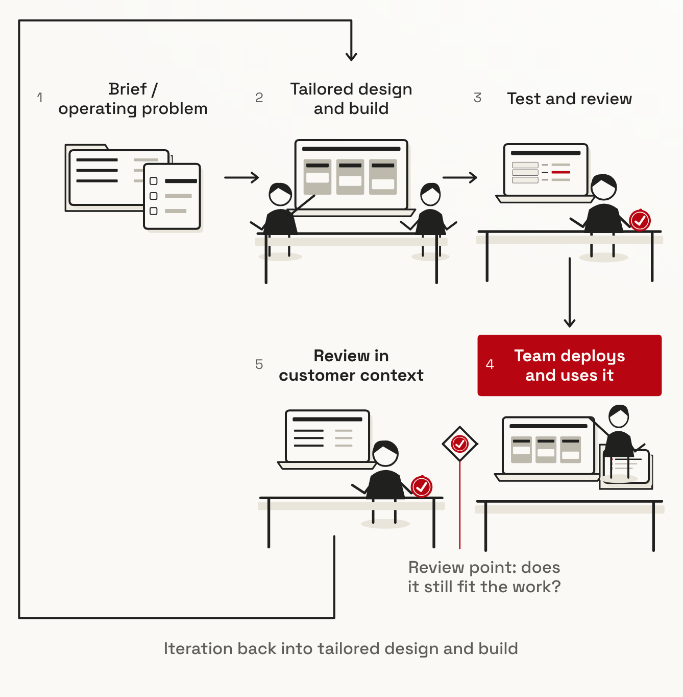
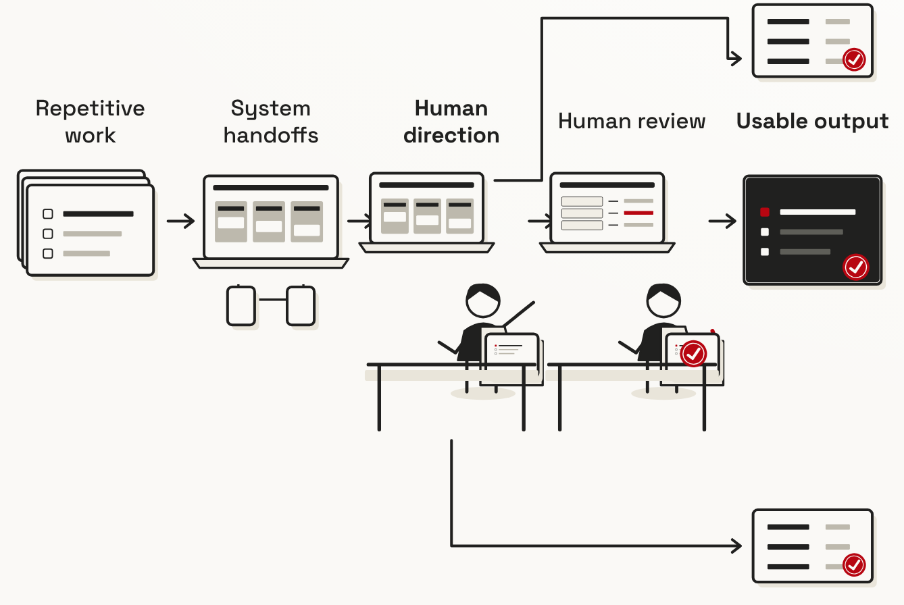
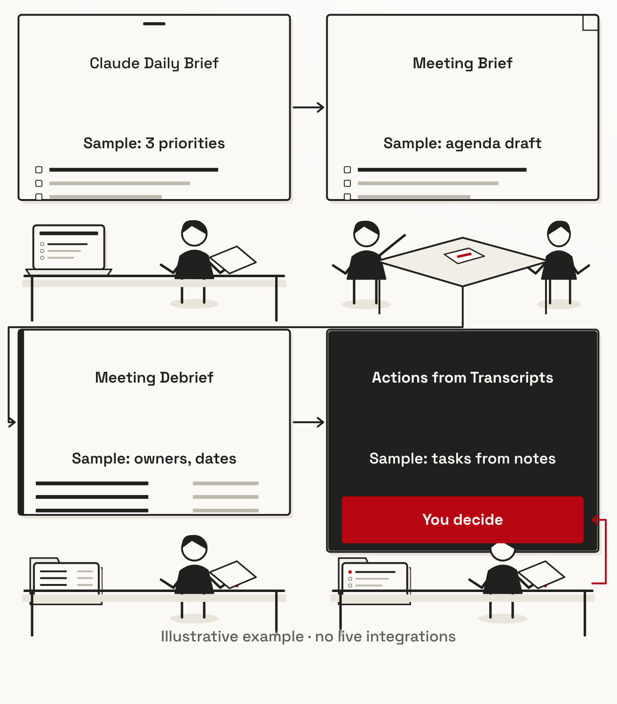
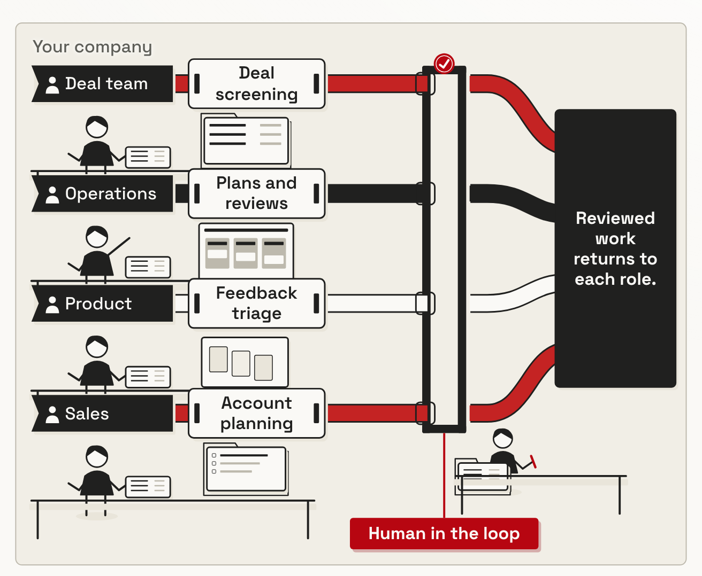
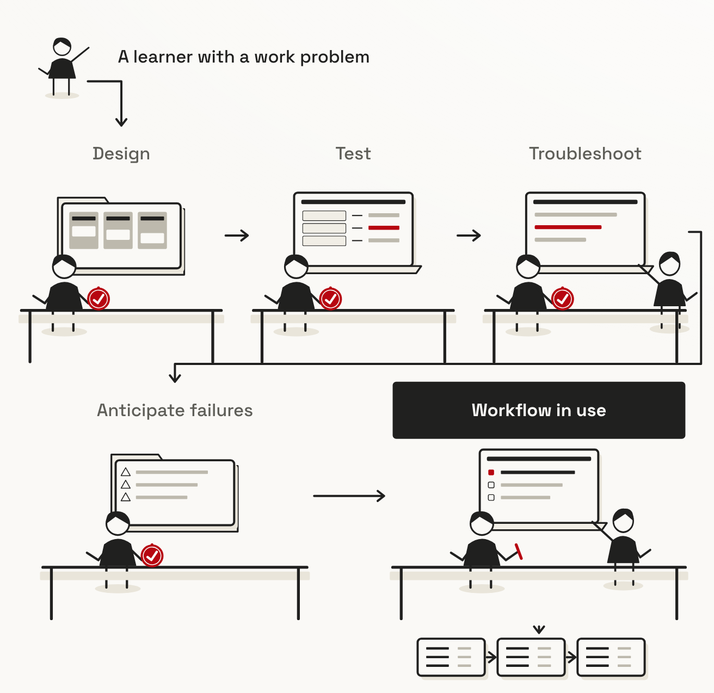

Workflows
Customer delivery: source material, co-design, test, handover and refit.

The owner-confirmed direction, rendered from the website's actual drawing modules. Every existing label and connection stays. Workshops remains the visual reference. These captures isolate the artwork from the site's sticky header so you can inspect it clearly.
Customer delivery: source material, co-design, test, handover and refit.

Repeated work crosses systems under human direction and review.

Distinct documents and decisions across a working day.

Four workstations, four separate lanes, one human review.

Build, test, investigate failures and explain a reusable tool together.
